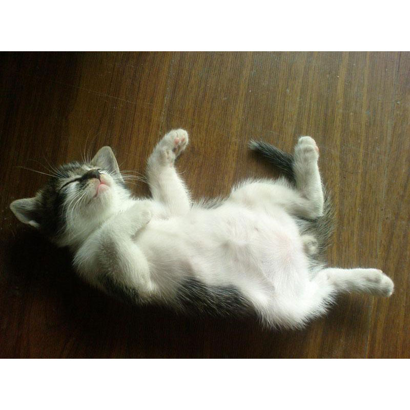

叶**

- 手机：1860********
- email：perry@yeeh.org
- 学历：专科
- github：https://github.com/perryyeh
- 籍贯：江苏
- 主页：http://www.yeeh.org/
简介
目前就职于盛付通，主要负责盛付通下属彩票、支付网关以及手机支付网关，商城前端方面架构和开发，熟悉前端相关技术，熟练后端和数据库。
有pc端和移动端经验，喜欢追新和踩坑，合群。
工作概览
2012.4-至今盛付通
2009.12-2012.4盛大在线
2007.10-2009.11彰玉电子
2003.7-2007.10苏州互讯
工作经历
2012.4-至今盛付通
- 盛付通彩票
- 盛付通官网
- 迷你刷
- 手机sdk支付网关
- 第三方支付网关
- 等
- 其他：集测服务器配置，规范制定，可用性评估，架构
2009.12-2012.4盛大在线
- 盛大商城
- 返利
- 数娱卡
- 其他：从此时开始专职前端，协调前后端接口等。
2007.10-2009.11彰玉电子
- 基于eBay api的第三方魔兽装备道具交易平台和管理系统，基于asp.net和sql server开发。
其他
宅
喜欢折腾能让人更懒的程序和硬件，比如www.passid.org
爱轮滑和游泳